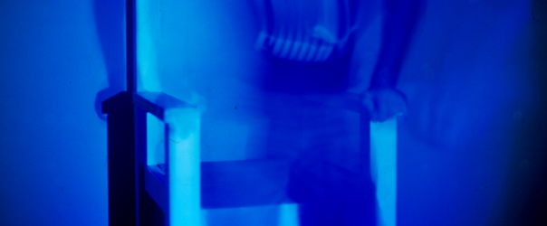

|
-La silla, fabricada en Dm.
-Un espejo, para que el espectador-víctima pueda verse mientras está siendo ejecutado.
-Un proyector de video.
-Un ordenador.
-Una fotocelula.
-La aplicación informática, consta de dos videos. El primero que se proyecta sobre la silla vacía y a su vez invita a sentarse. Y el segundo que se activa cuando un espectador se sienta.
| ← | ∀ | → |